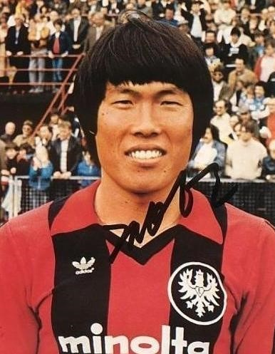
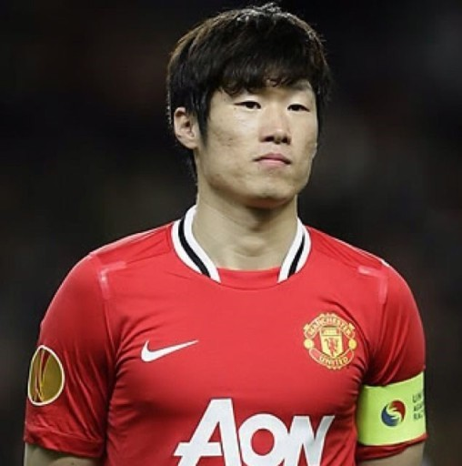

차범근
차범근
차범근 선수는 박지성 선수 이전에 선수 생활을 하였던
우리나라 축구 전설중 한명이다.
차범근은 1978년에 독일 다름슈타드로 넘어가 선수 생활을 시작하였고
프랑크 푸르트와 레버쿠젠을 거쳐 선수생활을 이어갔다.
독일 기차역에 차범근의 벽화가 그려져 있을 만큼 차범근 선수가 대단하고
독일 축구의 전설적인 인물이었다는 것을 알 수 있다.
2002년 독일의 전설 미하엘 발락이
"여기가 차붐의 나라입니까?"라고 한 것은 유명한 일화중 하나이다.

박지성